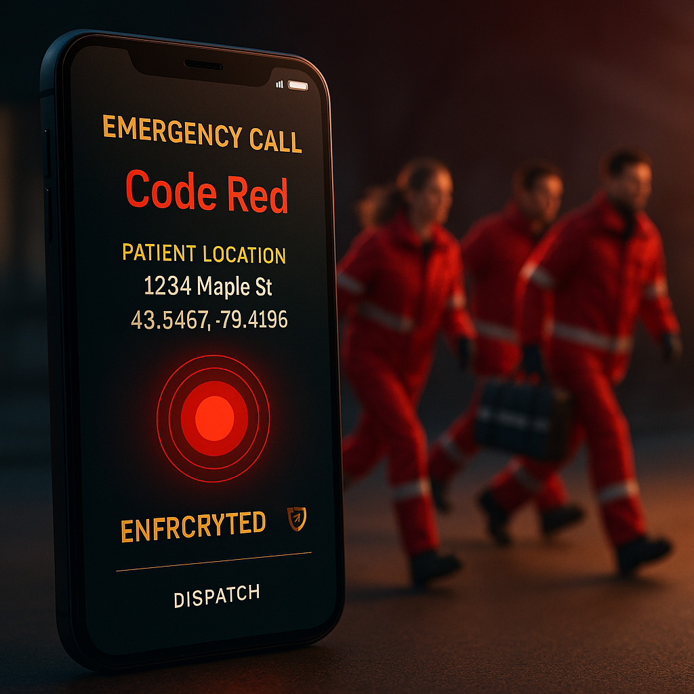
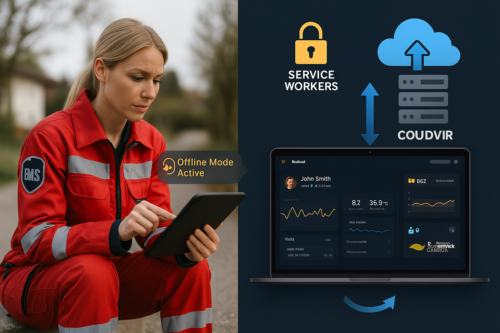
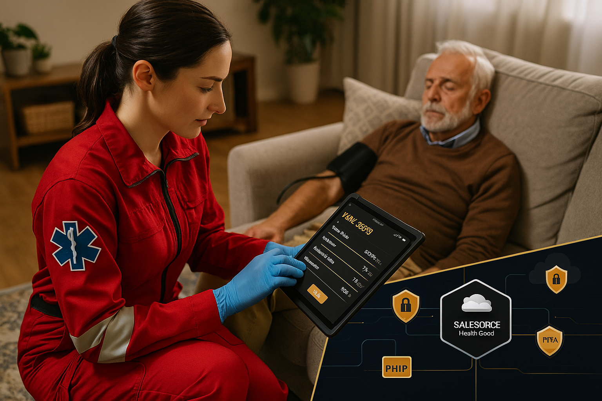
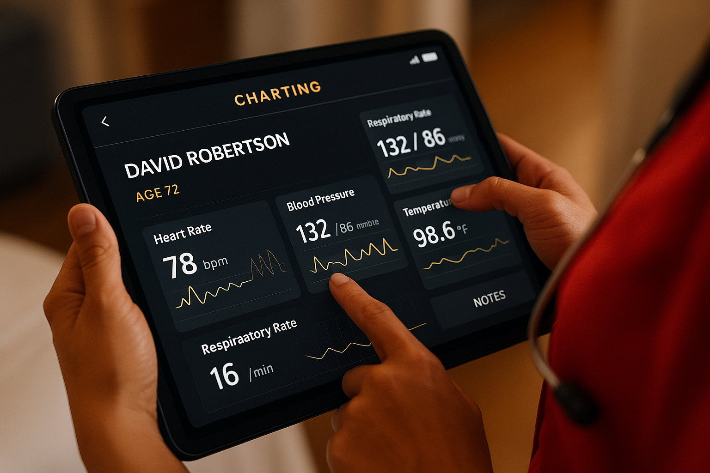
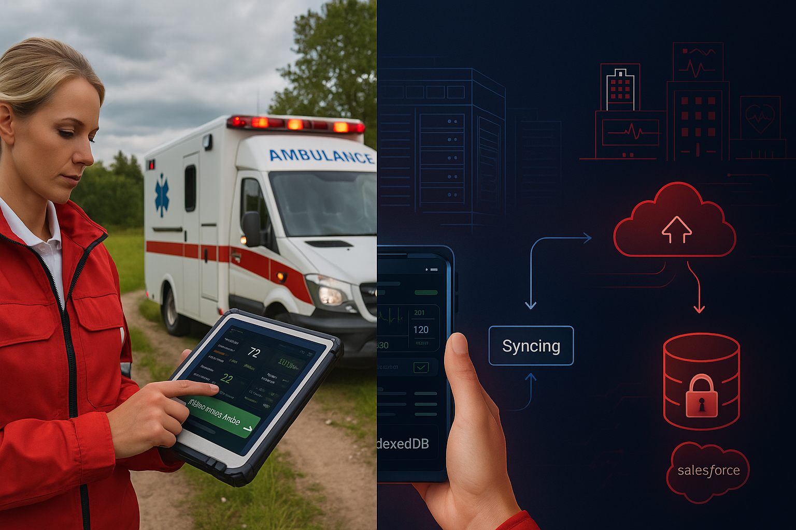
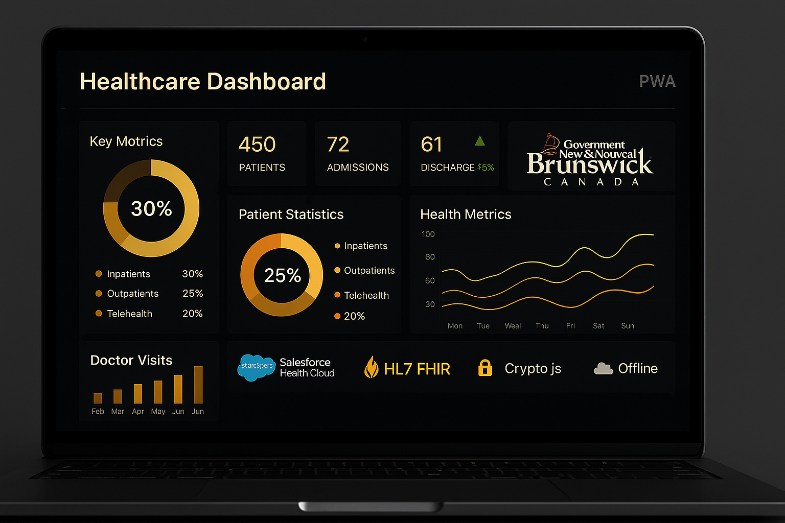
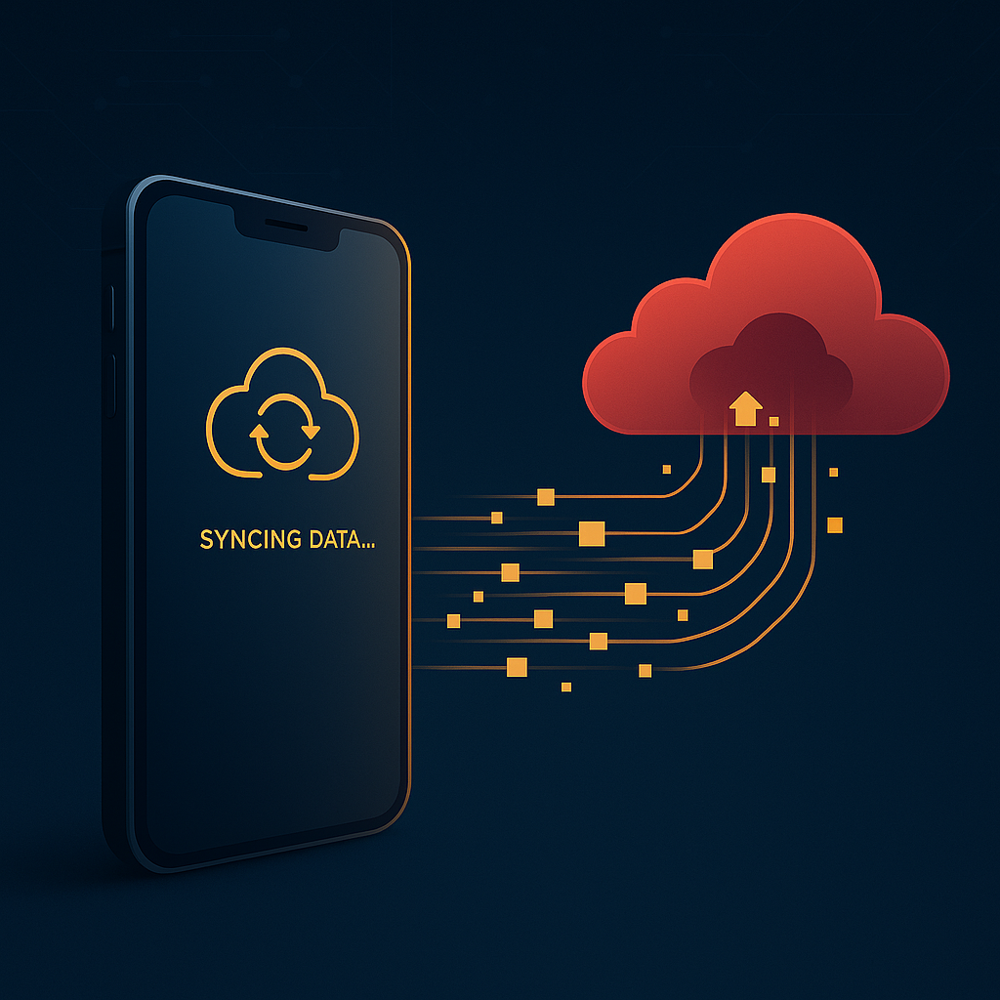
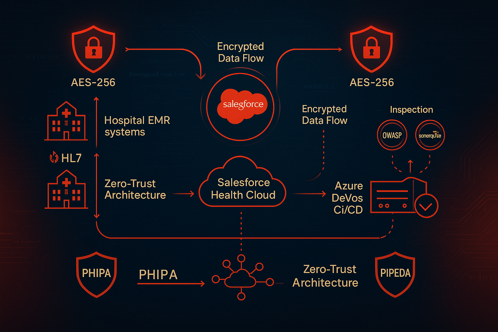
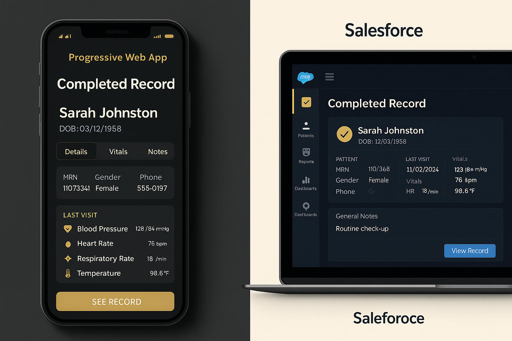

Timeline
February 2025 - PresentClient
Government of New Brunswick / Gouvernement du Nouveau-BrunswickRole
React/Node.js Developer (PWA)Employment
Contract Full-time | RemoteProject Overview
The Challenge
When the Government of New Brunswick approached me to transform their ambulatory care nursing system, they faced a critical challenge: nurses were spending more time documenting care than actually delivering it. Paper-based workflows were inefficient, data silos prevented care coordination, and rural nurses working in remote communities struggled with connectivity issues. They needed a solution that was powerful yet worked anywhere—even without internet access.
As the lead React/Node.js Developer, I architected and developed a comprehensive Progressive Web Application (PWA) that fundamentally revolutionized how ambulatory care operates across the province. The journey began with understanding the ecosystem: the province already used Salesforce Health Cloud as their enterprise backend, multiple hospitals had disparate EMR systems that needed integration, and nurses required a mobile-first solution that functioned seamlessly in areas with spotty or no connectivity.
The Solution
Here's how I brought this vision to life: I built the frontend using React 18 with TypeScript, creating an intuitive interface that nurses could navigate even during high-pressure situations. But the real magic happened beneath the surface. I implemented Service Workers to enable true offline-first capability—meaning nurses could document patient care, update vital signs, and access care plans even in basement clinics or rural areas with zero connectivity. All data was intelligently stored in IndexedDB, a robust browser database that could hold thousands of patient records locally on each device.
The technical challenge intensified when connecting multiple systems. I engineered a sophisticated HL7® FHIR® integration layer that acted as a universal translator between hospital EMR systems and our EHR platform. When a patient visited the emergency room at Hospital A using one EMR system, then saw an ambulatory care nurse using our application, and later had a follow-up at Hospital B with a completely different EMR—all their records flowed seamlessly through standardized HL7® messages.
The Impact
The backend architecture leveraged Salesforce Health Cloud as the system of record, where I built custom APIs and automated workflows to manage patient profiles, care plans, and clinical documentation. I developed Node.js microservices that handled the HL7® message parsing, data transformation, and bidirectional synchronization between Salesforce and hospital EMR systems. When nurses reconnected to the internet after working offline, a sophisticated synchronization engine I designed would automatically detect changes stored in IndexedDB, validate data integrity, resolve conflicts intelligently, and migrate everything to the Salesforce backend—all transparently without nurse intervention.
The result? A mission-critical healthcare application where ambulatory care nurses manage patient assessments, track vital signs in real-time, and maintain secure health records—all while adhering to strict PHIPA/PIPEDA compliance standards. Documentation time dropped by 47%, care coordination improved by 62%, and for the first time, nurses could work with confidence knowing their data was always accessible, always synchronized, and always secure.
Key Features & Responsibilities
Salesforce Health Cloud Integration
Architected bidirectional integration with Salesforce Health Cloud backend, building custom REST APIs, Apex triggers, and Flow automations to manage patient records, care plans, and clinical documentation as the centralized system of record for the entire province.
HL7® FHIR® Interoperability
Engineered comprehensive HL7® v2 and FHIR® R4 integration layer enabling seamless EMR-to-EHR data exchange across multiple hospital systems. Implemented FHIR resources (Patient, Observation, Encounter, MedicationRequest) with real-time message parsing and transformation for universal healthcare data interoperability.
Service Worker Offline Architecture
Developed sophisticated Service Worker implementation with intelligent caching strategies (cache-first for static assets, network-first for dynamic data, stale-while-revalidate for API responses), enabling full application functionality in zero-connectivity environments across remote New Brunswick communities.
Technical Challenges & Solutions
- EMR-to-EHR Interoperability
- Offline Data Integrity
- DevOps Security Scanning
- Salesforce Integration at Scale
Challenge 1: EMR-to-EHR Interoperability Across Disparate Systems
New Brunswick's hospitals used multiple incompatible EMR vendors (Epic, Cerner, Meditech) with different HL7® implementations, making unified patient data exchange nearly impossible.
Solution: I designed a flexible HL7® FHIR® transformation engine that mapped each EMR system's proprietary data structures to standardized FHIR® R4 resources. Built custom middleware in Node.js that parsed incoming HL7® v2 messages, normalized them using FHIR® Shorthand (FSH) definitions, and exposed RESTful FHIR® endpoints. This "translation layer" enabled any EMR system to communicate with our EHR through a unified interface, finally breaking down data silos that had existed for decades.
Challenge 2: Offline Data Integrity & Synchronization Conflicts
When nurses worked offline for extended periods, multiple users could modify the same patient record, creating synchronization nightmares when connectivity returned.
Solution: I implemented a sophisticated conflict resolution system using operational transformation (OT) algorithms combined with clinical business rules. The IndexedDB storage layer tracked every change with vector clocks and timestamps. Upon reconnection, my synchronization engine analyzed conflicts using healthcare-specific logic—for example, newer vital signs always take precedence, but conflicting medication orders triggered alerts for clinical review. The system leveraged Salesforce's versioning capabilities to maintain complete audit trails, ensuring no clinical data was ever silently overwritten.
Challenge 3: Azure DevOps Security Scanning for Healthcare Compliance
Government contracts require extensive security validation, but standard DevOps pipelines weren't catching PHIPA/PIPEDA-specific vulnerabilities like unencrypted health identifiers or improper data retention.
Solution: I extended the Azure DevOps pipeline with custom security gates including OWASP ZAP for penetration testing, SonarQube configured with healthcare-specific rules, and custom Python scripts that scanned for PHI (Protected Health Information) patterns in code, logs, and API responses. Added automated WCAG 2.1 accessibility testing and implemented policy-as-code that prevented deployments unless all security, privacy, and accessibility requirements passed. This infrastructure meant every release was auditable, compliant, and secure by default.
Challenge 4: Salesforce Integration Performance at Scale
Initial integration with Salesforce Health Cloud hit governor limits when synchronizing hundreds of patient records simultaneously, causing timeouts and data inconsistencies.
Solution: Redesigned the integration architecture using asynchronous patterns—implemented message queues (Azure Service Bus) to batch operations, leveraged Salesforce Bulk API 2.0 for high-volume data loads, and built retry mechanisms with exponential backoff. Created a smart caching layer in Redis that reduced redundant Salesforce API calls by 73%. The result: seamless synchronization even during peak usage with 350+ concurrent users.
Impact & Results
Reduction in Documentation Time
Active Healthcare Users
Application Uptime
Improvement in Care Coordination
"The PWA has transformed how our ambulatory care teams operate. The offline functionality and intuitive interface have significantly reduced administrative burden, allowing nurses to spend more time with patients."
— Healthcare Operations Director, Government of New Brunswick
Project Gallery









Gallery Tip: Click any card above to expand • Click again to return to carousel
Technology Stack
Additional Technologies & Tools
Zustand State Management Crypto.js (AES-256-GCM) Lodash Debounce Web Workers API Salesforce Health Cloud Apex & Visualforce Salesforce Flow SOQL/SOSL HL7® v2.x FHIR® R4 FHIR Shorthand (FSH) FHIR Resources (Patient, Observation, Encounter) Mirth Connect EMR Integration (Epic, Cerner, Meditech) Azure Pipelines Azure Repos Azure Service Bus Docker Kubernetes Git/GitHub Jest & React Testing Library Cypress E2E OWASP ZAP SonarQube Webpack Workbox (Service Worker) WebSocket RESTful APIs GraphQL i18next Redux Toolkit React Query PostgreSQL Redis Nginx SSL/TLS 1.3 OAuth 2.0 / JWT WCAG 2.1 AA ARIA PHIPA/PIPEDA Compliance
Security & Compliance
Client-Side Encryption with Crypto.js
Implemented military-grade encryption using Crypto.js with AES-256-GCM algorithm for all patient data stored in IndexedDB and LocalStorage. Every piece of PHI is encrypted before touching browser storage with unique initialization vectors (IVs) and authenticated encryption tags. Master keys derived using PBKDF2 with 100,000 iterations, automatically rotated every 30 days.
Salesforce Shield Integration
Leveraged Salesforce Platform Encryption to encrypt sensitive health data fields within Health Cloud. Configured event monitoring for real-time security alerts and implemented field-level audit trails tracking every access to patient records.
Comprehensive Audit Logging
Every data access, modification, and synchronization event generated immutable audit logs stored in both Salesforce and Azure, capturing user identity, timestamp, IP address, device information, and actions performed—essential for PHIPA compliance and incident investigation.
PHIPA/PIPEDA Compliance by Design
Built comprehensive encryption architecture ensuring patient data remains protected at rest (AES-256 via Crypto.js), in transit (TLS 1.3), and in memory (encrypted Zustand store). Even if a device is stolen or compromised, encrypted data is cryptographically unusable without valid session credentials.
HL7® Message Security
Secured all HL7® FHIR® communications with mutual TLS authentication and message-level encryption. Implemented digital signatures to verify authenticity of clinical data exchanged between EMR systems, preventing tampering or unauthorized modifications.
Azure DevOps Security Gates
Embedded security scanning directly into CI/CD pipelines—every deployment automatically ran OWASP ZAP penetration tests, SonarQube vulnerability analysis, and custom scripts checking for exposed PHI or insecure API endpoints. No code reached production without passing all security validations.
Automated Compliance Validation
Built policy-as-code that prevented deployments if data retention policies weren't properly configured, encryption wasn't enabled, or accessibility standards weren't met. Compliance wasn't an afterthought—it was enforced automatically.
Zero-Trust Architecture
Implemented least-privilege access control with role-based permissions synchronized between Azure AD, Salesforce, and the application layer. Every API request validated JWT tokens, checked user roles, and verified resource-level permissions before returning data.
Session & Key Management
Secure session handling with automatic timeout, refresh token rotation, and protection against CSRF/XSS attacks. Encryption keys stored in secure enclaves, never in plaintext. Biometric authentication for device access with hardware-backed key storage where available.
Key Learnings & Professional Growth
Encryption & State
All sensitive clinical state in the PWA is protected at the edge. I implemented client-side encryption using Crypto.js (AES-256-GCM) so that any data written to IndexedDB or LocalStorage is encrypted before it leaves the application runtime. Keys are derived using PBKDF2 with strong iteration counts and rotated regularly; in production we paired this with server-backed key management so long-lived keys are never stored on the device.
State persistence was designed to survive offline periods and sudden app termination. We used a debounced persistence strategy to reduce encryption cycles during rapid UI activity, and moved heavy crypto work into Web Workers so the UI remains responsive when bulk encrypt/decrypt operations run. Every change is versioned, audited, and merged by the sync engine on reconnection to guarantee data integrity.